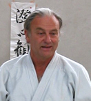

A mozdulat természete a tanulás és tanítás tükrében
Részlet Malcolm Tiki Shewan
"Iaido - The Art of Japanese Swordsmanship" címû könyvébõl
(fordította Gollob Szabolcs és Joó Sándor)
Bár könyvem bevezetõjében már elmondtam, hogy a Iaidot nem lehet könyvbõl (illetve bármilyen mennyiségû elméleti anyagból, pl. képek alapján) tanulni, határozott meggyõzõdésem, hogy mindazonáltal létezik egy bizonyos kapcsolat a "gondolati” úton történõ megértés és "mozdulaton” keresztül történõ megértés között. Továbbá úgy érzem, hogy ezt a kapcsolatot jobban meg lehetne érteni, ha valamiféle kielégítõ magyarázattal lehetne szolgálni.
A tanítás keleti módszere, felettébb helyesen, azon az elképzelésen alapszik, hogy mozdulatokat azok végrehajtásával kell tanulni. A helyes mozdulatok átadásának fõ módszere, így a tanár részérõl a mozdulatok bemutatása, a tanítvány részérõl pedig azok "lemásolása”. Ezek után a mozdulatok kijavítása következik, egészen addig, amíg azok meg nem egyeznek az eredetileg bemutatott mozdulatokkal. Úgy tartják, hogy ha a tanítvány elég keményen és elég sokáig dolgozik, elérhet a mûvészet egy olyan fokú megértéséhez, ami a mesteri szinthez vezet. Ez a magasabb szintû "megértés”, amelyet csak egy másik "mester” ismerhet fel, különbözteti meg a magasabb szintû elsajátítást minden olyan harcmûvészetben, ahol ez a magasabb szint elérendõ cél. Minden, ami ennél kevesebb a "mester” szemében csak "technikai tökéletesség” lehet, de nem a "mûvészet szellemiségének tökéletes birtoklása”.
Mióta abban a kiváltságos helyzetben vagyok, hogy Aikidot és Iaidot gyakorolhatok és taníthatok, szinte egyfolytában azzal a kéréssel fordulnak hozzám, hogy "magyarázzam el szavakkal” is azt, amit át szeretnék adni. Két dolog vált rögtön szembetûnõvé a számomra:
- a legtöbb ember mindig igényli a magyarázatot arra, amit csinálnia kell;
- ezeknek az embereknek az a benyomásuk, hogy tanulásuk kielégítõbb lesz, ha megkapják ezeket a "magyarázatokat”.
Nem sokkal azután, hogy a kéréseket kielégítve elkezdtem magyarázatokat adni, arra a következtetésre jutottam, hogy nagyon kevés gyakorló volt képes valóban hatékonyabban tanulni a kapott magyarázatok hatására.
Két fontos következtetést vontam le:
1) a magyarázatokkal való tanítás aligha lehet hatékony, két oknál fogva:
a) a tanárnak nem áll módjában, hogy a mozdulatot megfelelõ módon írja le szavakkal,
b) a tanítvány nem képes megérteni a mozdulatok szóbeli magyarázatát.
2) ez a helyzet pedig annak köszönhetõ, hogy - bizonyíthatóan - nem létezik megfelelõ mélységû tudásanyag, arra nézve, hogyan is funkcionál egy teljes Ember. Így nincs honnan meríteni azokat az elemeket, amelyek lehetõvé tehetnék a valós magyarázatokat.
Ennél a pontnál két kérdéssel kerültem szembe:
(1) létezik-e valahol olyan kielégítõ tudás az emberrõl, és arról, hogy hogyan mûködik minden szempontból, beleértve a fizikális és a mentális funkciót is, amely fényt vethetne a problémára?
(2) tehetek-e magam kísérletet a válasz megkeresésére, a saját gondos megfigyeléseimen és tapasztalataimon keresztül?
A végsõ következtetésemet, amely az utóbbi két kérdést illeti, késõbbre hagyom. Most azonban hadd ajánljam föl a következõ észrevételeket, mint elõzetes megközelítését a "magyarázat” és "bemutatás” között feszülõ zavaró ellentét esetleges feloldásához.
A "magyarázat” a gondolatok, az ideák biroldamához tartozik. Ezek közvetítéséhez "szavakra” van szükség. Az egész együtt egy gondolati, vagy intellektuális funkcióként értelmezhetõ.
A "végrehajtás” vagy "bemutatás” a mozdulatok birodalmához tartozik. Gondolok itt a mozdulatokra, melyek lehetnek összetettek és bonyolultak, amelyek egyszerûbb mozdulatokból állnak, illetve gondolok a mozdulat "szavaira”, vagyis arra a képességre, amellyel megfigyeljük, megragadjuk, és végül lemásoljuk a mozdulatot. Ezt az egészet együtt értelmezhetjük egy fizikai vagy mozdulati funkciónak.
Ez egy rendkívül leegyszerûsített leírása az ember sokféle mûködése közül kiemelt két funkciónak. Azonban ez az a két funkció, amelyek számunkra most lényegesek. Ezért szeretnék néhány olyan nézõpontról beszélni, melyek újszerû felfogásnak tûnhetnek, és amelyeket nehéz megérteni megfelelõ elmélkedés nélkül. Reményeim szerint ezek a gondolatok arra fogják az olvasót serkenteni, hogy az itt leírt módszer alkalmazásán keresztül a saját magán belûl létezõ, egyre több információhoz és tudáshoz jusson hozzá. Ami azt illeti, egyben választ kapunk arra is, hogy az esetek többségében miért nem segítik vagy javítják a "magyarázatok” a "bemutatás” hatásfokát. A megfigyelések önmagukban nem az elsõdlegesen fontos dolgok. Ami igázán érdekel bennünket, az a megfigyelések módja. Ez az a lényegi pont, amelyre fel szeretném hívni a figyelmet.
A válasz tehát abban rejlik, hogy egy magasabb szintû tanuláshoz, a saját mozdulatunk egy nagyon speciális megfigyelésére van szükség. Ezt a fajta megfigyelést meg kell érteni, és tanulás utján kell elsajátítani, mert magától nem alakul ki.
Példaként a következõt mondhatjuk: amikor egy új mozdulatot tanulunk, azt vagy magyarázzák, vagy bemutatják, vagy esetleg mindkettõt egyszerre, és a tanítvány megpróbálja reprodukálni, amit megértett vagy látott. Ennek eredményeképpen, a tanítvány valami mást fog végrehajtani, mint amit elmagyaráztak vagy bemutattak. Ez azért van, mert a magyarázat olyan intellektuális fogalmakból és ideákból áll, amelyeket a tanítvány még nem mondhat magáénak. Tehát nincs meg az intellektuális fogalmaknak és ideáknak az a tárháza, amely lehetõvé tenné a számára a magyarázat gondolati képpé való átalakítását, nem is beszélve annak mozdulatokba való átvitelérõl. A bemutatás esetében pedig, nincs meg a mozdulatoknak - legyenek bár bonyolultak vagy egyszerûek - az a tárháza, amelyben megfeleléseket találhatna, a bemutatásnál látottakra. Igy tehát képtelen lesz reprodukálni azt, amit bemutattak.
Ezek után, a tanítvány fogalmak és ideák egész sorát kezdi kialakítani, amelyek azt az érzést keltik benne, hogy megfelelnek a tanár által közölni kívánt fogalmaknak és ideáknak. Mivel ezeket nem láthatjuk, kizárólag a tanítvány erõfeszítéseinek alapján következtethetünk arra, hogy ezek valójában nem felelnek meg a tanár által közvetítetteknek. (Mindamellett, ne feledjük, hogy a jó tanár mindig kész arra, hogy ezt a folyamatot megtörje azzal, hogy a tanítványt egy látszólag megoldhatatlan szituációba helyezi.) A mozdulat magyarázat nélküli bemutatása esetén láthatjuk, hogy a gyakorló nem képes a mozdulatot lemásolni, és ebbõl tudjuk, hogy csak gyakorlatlan mozdulatok állnak rendelkezésére az utánzáshoz.
Mivel itt nem feladatunk, hogy megkíséreljük meghatározni annak a módját, hogy egy tanítvány miképpen juthat hozzá tökéletesen ugyan azokhoz a fogalmakhoz és ideákhoz, amelyeket a tanára birtokol, így most a probléma megoldása helyett megelégszünk annak egyszerû feltárásával. A mozdulatok bemutatásával kapcsolatban a következõ érdekes megfigyeléseket tehetjük. Egy mozdulat bemutatása láttán a tanítvány két dolgot tehet. A mozdulatot vagy (a) helyesen vagy (b) helytelenül utánozza. Más lehetõség nem létezik.
Ha ennél a pontnál a tanítvány helyes mozdulatot tudna produkálni, és nem csak egyszer, lényegileg mindent tudna, ami számára megtanítható.
Ha így áll a dolog, akkor a tanítás és tanulás teljes problematikája azzal az idõtartammal függ össze, amire a tanítványnak szüksége van ahhoz, hogy eljusson a kívánt mozdulat végrehajtásának képtelenségétõl a mozdulat megfelelõ végrehajtásának képességéhez.
Ez a következõképpen értelmezhetõ: (ez igazából annak a leírása, hogy a legegyszerûbb értelemben véve hogyan sajátítható el egy mozdulat). Egy mozdulat instrukció nélküli végrehajtásakor feltételezhetõ, hogy bárki is vállalkozik rá, helytelenül fogja csinálni. Egyéni szempontok alapján ez vagy kielégítõ lesz, vagy nem. Ha nem lesz számára kielégítõ, akkor a mozdulat végrehajtója újra fog próbálkozni, amíg az idõ múlásával és tapasztalatai segítségével kielégítõ mozdulatsort hoz létre. De a kielégítõ mozdulatsor nem feltétlenül helyes, mely esetben az idõ és az erõfeszítés nem érte el a kívánt célt, és a mozdulatsort végsõ soron mégis ki kell javítani.
Ez azt jelenti, hogy minden mozdulat pillanatában valami helyes lehet benne, valami pedig nem. Ha a mozdulatot végzõ "általában” helyesen hajtja végre, akkor végül eléri majd a tökéletességet, de ha "általában” helytelenül hajtja végre, akkor végsõ soron olyan mozdulatsort hoz létre, amely számára tökéletesnek látszik, de valójában helytelen.
És akkor azt el kell felejteni.
Felmerül a kérdés:
A mozdulat végrehajtásának pillanatában van-e olyan pillanat, amely választási lehetõséget biztosít a helyes és a helytelen mozdulatsor között? Ez nagyon érdekes kérdés!
Van választási lehetõség, ha a mozdulat pillanatában adott két feltétel:
a) a mozdulatot végzõ "meg tudja figyelni” saját mozdulatát;
b) a mozdulatot végzõ meg tudja különböztetni a helyes mozdulatot a helytelentõl, amikor "megfigyeli”.
Fentebb már említettem, hogy a magasabb szintû tanuláshoz "a saját mozgásunk különleges megfigyelési módja” szükséges. Itt kell ezt a módot alkalmazni. Ha egy egyszerû mozdulat végrehajtásakor minden megfigyelési képességünkkel arra koncentrálunk, hogy a mozdulat során az izmokban keletkezõ érzeteket megfigyeljük, akkor megfigyelhetjük magát a mozdulatot és meg tudjuk különböztetni a helyes, illetve a helytelen mozdulattal járó érzeteket. Ilyenkor úgy kell viszonyulnunk a helyzethez, mintha az életünk múlna a helyes mozdulat megragadásán, és ez lenne az elsõ és egyben utolsó lehetõségünk erre. Valós küzdelemben tényleg így is lenne!
Ez a kívánt megfigyelési mód egyszerû ismétlés segítségével is megmutatja, hogy az észlelt érzetek közül néhány a helyes mozdulat tendenciáit mutatja, néhány pedig a helytelen mozdulatét. A két mozdulatcsoport megkülönböztetésével, a gyakorló valójában az önfejlesztés eszközéhez jut hozzá. A jelenlegi gyakorlás esetében a gyakorló ebbõl semmit sem vesz észre!
Egyáltalán nincs tudatában annak, hogy mit csinál!
E megfigyelések megerõsítéseként érdemes elvégezni az alábbi érdekes kísérletet. Tegyük elõre a lábunkat, és próbáljuk lábujjainkat egymástól függetlenül oldalra, vagy fel-le, stb. mozgatni. Sokáig nem tudjuk megcsinálni, mert nem ismerjük fel annak az izommozgásnak az érzetét, amely a lábujjak bármilyen irányú mozgásához szükséges (a nagylábujj és a kislábujj esetleg képes némi független mozgásra). A mozdulat sokszori, a kívánt koncentrációval végrehajtott ismétlése után felismerhetõvé válnak a különbözõ mozdulatokkal járó különbözõ érzetek: a folyamatos gyakorlás megmutatja a kívánt mozdulathoz kapcsolódó érzetet, és a megzavart mozdulathoz kapcsolódó érzetet is. Egy idõ után lehetõvé válik a kívánt mozdulat végrehajtásával járó helyes érzet felismerése. Ezután minden mozdulat tökéletes lesz, amíg a "különleges koncentráció” fennmarad. A mozdulat csak akkor válik egyre tökéletesebbé, ha semmi sem zavarja meg (Aikido vagy Iaido technika esetében az instruktor már az elsõ pillanatban kijavítja a gyakorló hibáit, így az a kezdettõl fogva megtapasztalhatja a helyes mozdulathoz kapcsolódó helyes érzetet). Ha minden mozdulatot így tanulnánk, akkor nagyon rövid idõ alatt rengeteget lehetne javítani a mozdulatokon, hiszen az oktatás elismerten többnyire vagy a nem tudatosan gyakorlók hibáinak folyamatos javításából, vagy a nem tudatos gyakorlás következtében végrehajtott helytelen mozdulatok kiküszöbölésébõl áll.*
Ha azonban nem értjük meg, nem alkalmazzuk és nem tartjuk fenn ezt a "különleges megfigyelést”, akkor a "magyarázat” és a "bemutatás” segítségével csak a már megszokott eredményeket érhetjük el.
Egyértelmû, hogy ha a gyakorlók a jövõben nem tanulják meg, hogyan lehetnek minden pillanatban jobban tudatában önmaguknak, és az elvégzett mozdulatnak, akkor még a legünnepeltebb mester sem tudja õket jobban vagy gyorsabban tanítani.
De e gondolatok célja csupán a jelenlegi akadályokhoz vezetõ esetleges út megmutatása.
* Általában azonban a gyakorló már kezdetben is olyan mozdulatokat hajt végre, amelyek egy bizonyos célra "részben” megfelelnek, "részben” pedig nem. Mivel általában addig egészen más céllal tanulta azokat. Például lehet, hogy ismeri a "kar felemelésének” mozdulatát, mert megtanulta, hogyan tegyen fel egy kalapot, hogy vakarja meg a fejét, hogyan vágjon fát, stb., amelyek közül azonban egyik mozdulat sem felel meg pontosan a vágás elõtti kardfelemelésnek. Következésképpen a természetesnek érzett "megszokott” mozdulatsor nagy része olyan mozdulatokból áll, amelyeket korábban nem a megfelelõ céllal gyakoroltak. Ezen a ponton le kívánom szögezni, hogy ez a "koncentrált megfigyelés” eleinte csak nagyon egyszerû mozdulatok megfigyelésére alkalmazható, mint például szög beverése, favágás, illetve az Aikido vagy Iaido esetében: shomenuchi Suburi; alap taiso; egyszerû kéz-, láb- és testmozgások, (te-sabaki, ashi-sabaki, tai-sabaki); Reishiki (etikett), stb. De éppen a mozdulat egyszerûsége miatt válik lehetõvé a mozdulat megfigyelése, és ez adja az “edzés” értékét. Ha elég intenzíven figyelünk az ilyen mozdulattal járó érzetekre, akkor lecsupaszíthatjuk a mozdulat legbelsõ lényegét. És bizonyos idõ után, ha kitartóan haladunk tovább, nem csak kezdjük megérteni, hogy mik a mozdulatok valójában, és hogyan kapcsolódnak az elvégzett gyakorlatokhoz, hanem azt is látni fogjuk, hogy saját vezérlõ értelmük van, amit nem érzékelünk, és érzések is kapcsolódnak hozzájuk, amelyeket szintén nem érzékelünk, de tökéletessé teszik a mozdulatokat. És amikor e gondolat, s ami mögötte van, kifejti bennünk a hatását, akkor a “magyarázat” és a “teljesítmény” közötti tátongó ûr bizonyos mértékig csökkenni fog, és késõbb megpillanthatjuk a gyakorlótól a mesterhez vezetõ érdekes utat.
>>> vissza az olvasnivalókhoz